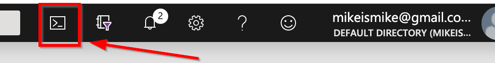

Introduction
Welcome to our Terraform Workshop!
We've been using Terraform to deploy Azure infrastructure for the past year, and have enjoyed the experience so much, we felt we needed to bring it to you.
What is Terraform?
Terraform is an open source tool Hashicorp that allows you to safely and predictably create, change, and improve infrastructure. It codifies APIs into declarative configuration files that can be shared amongst team members, treated as code, edited, reviewed, and versioned.
With Terraform you can:
- Write infrastructure as code
- Plan changes to your infrastructure
- Create reproducible infrastrcuture
Write infrastructure as code
With Terraform, you define infrastructure as code to increase productivity and transparency. Your Terraform can be (and should be) stored in a version control system, shared, and collaborated on by a team. With this approach, you track the incremental changes and historical state of your infrastructure. And, by nature, the codification of the infrastructure is automation friendly, so it can sit inside of a CICD pipeline to dynamically deploy infrastructure, then the code that runs on the infrastructure.
Plan changes to your infrastructure
Terraform provides an elegant user experience for teams to safely and predictably make changes to infrastructure.
Teams can understand how a minor change could have potential cascading effects across an infrastructure before executing that change (through a Terraform process called a plan). Terraform builds a dependency graph from the configurations, and walks this graph to generate plans, refresh state, and more.
Terraform also separates the plan process discussed above from the apply process, which makes the changes to the infrastructure. Separating plans and applies reduces mistakes and uncertainty at scale. Plans show teams what would happen, applies execute changes.
Terraform also have a rich library of infrastructure providers (Azure, AWS, GCP, OpenStack, VMware, Hyper-V, and more), which allow you to make changes across multiple on-premises and cloud environments at the same time.
Create reproducible infrastrcuture
Terraform lets teams easily use the same configurations in multiple places to reduce mistakes and save time. You can use the same configuration files to deploy multiple identical environments. Common Terraform configurations (like SQL/IIS or LEAN/MEAN stack apps) can be packaged as modules and used across teams and organizations.
About the Workshop
Our speakers include:
-
- Azure Cloud Solution Architect (CSA), KiZAN Technologies
-
- Azure Cloud Solution Architect (CSA), KiZAN Technologies
- Brosteins
Getting Started
To get started you'll need the following pre-requisites. Please take a few moments to ensure everything is installed and configured.
- Microsoft Windows PC or Mac or Linux. Just have a laptop.
- Azure Subscription (Trial is ok, or an Azure account linked to a Visual Studio subscription. See later sections of this chapter to create a free trial account or activate your Visual Studio subscription)
What You're Building
Using Terraform to deploy Azure infrastructure is easy, but there's a lot of different resources you could deploy - Azure is big. Really big. Too big to talk about all things Azure in a single day.
We've assembled an exciting workshop to introduce you to several Azure services that infra and dev teams typically deploy:
In this workshop, you'll learn be learning how to get started with Terraform and provision Azure resources.
In chapter 2, you'll start by writing code to deploy Azure resource groups, an App Service Plan, and an App Service.
Then in chapter 3, you'll learn how to create reusage code modules to create identical dev and prod environments.
Chapter 4 introduces you to Terraform state files, which is how Terraform manages the state of your infrastructure.
In chapter 5, you'll add a SQL database to your infrastructure and deploy a web site.
The workshop wraps up in chapter 6 by deploying an Azure App Gateway and Web Applicaiton Firewall (WAF) to protect the website you deployed previously.
Key concepts and takeaways
- Navigating the Azure portal
- Using Azure Resource Groups to manage multiple Azure services
- Deploying a web app to Azure web app service using Terraform
- Terraform naming conventions and standards
- Why Terraform state files are important and methods for managing state
- Deploying Azure SQL databases and apps from Visual Studio
- How Azure App Gateways and WAFs work, and how to deploy with Terraform
Materials
You can find additional lab materials and presentation content at the locations below:
- Presentation: https://github.com/mikebranstein/terraform-workshop
- Source code for the code used in this guide: https://github.com/mikebranstein/terraform-workshop
- This guide: https://github.com/mikebranstein/terraform-workshop-instructions
Creating a Trial Azure Subscription
If you already have an Azure account
If you have an Azure account already, you can skip this section. If you have a Visual Studio subscription (formerly known as an MSDN account), you get free Azure dollars every month. Check out the next section for activating these benefits.
There are several ways to get an Azure subscription, such as the free trial subscription, the pay-as-you-go subscription, which has no minimums or commitments and you can cancel any time; Enterprise agreement subscriptions, or you can buy one from a Microsoft retailer. In exercise, you'll create a free trial subscription.
Exercise: Create a Free Trial Subscription
Browse to the following page http://azure.microsoft.com/en-us/pricing/free-trial/ to obtain a free trial account.
Click Start free.
Enter the credentials for the Microsoft account that you want to use. You will be redirected to the Sign up page.
Note
Some of the following sections could be omitted in the Sign up process, if you recently verified your Microsoft account.
If you already ahve an Azure subscription tied to your Microsoft account, you may see a screen like this:

You're wekcome you use your existing subscription for the bootcamp. If you're planningto use your existing subscription, you can skip this exercise. Click Sign Up to create a new subscription.
Complete step 1 by entering your mobile phone number.

Select Text me or Call me to verify that you are a real person. Typein the verification code you receive on the phone or via text.
Next, complete the Payment information section.
A Note about your Credit Card
Your credit card will not be billed, unless you remove the spending limits. If you run out of credit, your services will be shut down unless you choose to be billed.
Press Next after completing the credit card section.
In the Technical Support section, select the last option (No technical support) and click Next.

In the Agreement section, check the I agree to the subscription Agreement, offer details, and privacy statement option, and click Sign up.
Your free subscription will be set up, and after a while, you can start using it. Notice that you will be informed when the subscription expires.

Your free trial will expire in 29 days from it's creation.
Activating Visual Studio Subscription Benefits
If you happen to be a Visual Studio subscriber (formerly known as MSDN) you can activate your Azure Visual Studio subscription benefits. It is no charge, you can use your MSDN software in the cloud, and most importantly you get up to $150 in Azure credits every month. You can also get 33% discount in Virtual Machines and much more.
Exercise: Activate Visual Studio Subscription Benefits
To active the Visual Studio subscription benefits, browse to the following URL: http://azure.microsoft.com/en-us/pricing/member-offers/msdn-benefits-details/
Scroll down to see the full list of benefits you will get for being a MSDN member. There is even a FAQ section you can read.
Click Activate your monthly Azure credit to activate the benefits.

You will need to enter your Microsoft account credentials to verify the subscription and complete the activation steps.
Preparing your Azure environment
You might be wondering how you can participate in a cloud workshop and not need any software installed.
Thanks to the Azure Resource Manager and some nifty templates I put together, we're going to provision a virtual machine (VM) with Visual Studio (and all the tools you'll need) installed in your Azure subscription. From that point forward, you can work from the VM.
It takes about 15 minutes to get the VM deployed to your subscription, so let's get started!
Exercise: Provisioning a Visual Studio Community VM in your Azure Subscription
First, we'll createa storage account and copy a Windows VM image into the storage account.
In the Azure portal, click the Cloud Shell link at the top:

If you've never opened a Cloud Shell, you may encounter a message like this:
If you see that message, select your Azure subscription and click Create Storage. Wait until you see a Cloud Shell (Bash) appear:

Using the Bash Cloud Shell, run various Azure CLI commands.
Create a resource group named workshop-vm-rg:
az group create --location eastus --name workshop-vm-rg
Create a storage account in the resource group. Be sure to replace
az storage account create --name <storage-account-name> --resource-group workshop-vm-rg --location eastus
Create a container in your storage account to hold VHDs:
az storage container create --account-name <storage-account-name> --name vhds
Start copying the virtual machine image from my storage account to yours.
az storage blob copy start --account-name <storage-account-name> --destination-blob terraform-win10-vs2019-v2.vhd --destination-container vhds --source-uri https://workshopvhds.blob.core.windows.net/vhds/terraform-win10-vs2019-v2.vhd
This will begin the copying process, but the copy may take 5-10 mintues. Use this command to check the status of the copy:
az storage blob show --account-name <storage-account-name> --name terraform-win10-vs2019-v2.vhd --container-name vhds --query "properties.copy"
When you run this command, you'll see various status messages showing you the copy progress. Wait for the completionTime and progress status to show a completion. In the image below, you can see my copy has not yet completed, and the progress is 141942784/136365212160, or ~0.1%.

Now that the copy has finished, get the URI of your virtual machine disk image. For example, it's https://storage-account-name}.blob.core.windows.net/vhds/terraform-win10-vs2019-v2.vhd. Keep this URI handy.
Deploying the Virtual Machine
Start by clicking the Deploy to Azure button below.

This opens the Azure portal in a new tab of your browser. If you're prompted to sign in, do so.
When the page loads, you'll see this custom deployment page:

Under Basics, select/enter the following
- Subscription: your Azure subscription
- Resource group: Create new
- Resource group name: workshop-vm-rg, (the name of the RG you created previously)
- Location: East US
- Os Blob Uri: the URI of the virtual machine image you just finished copying
Resource Groups
Formally, resource groups provide a way to monitor, control access, provision and manage billing for collections of assets that are required to run an application, or used by a client or company department. Informally, think of resource groups like a file system folder, but instead of holding files and other folders, resource groups hold azure objects like storage accounts, web apps, functions, etc.
Naming Resource Groups
I like to name my resource groups after their purpose, and append them with -rg, which signifies they are a resource group.
Under Settings, enter
- Virtual Machine Name: workshop-vm, or some other name that is less than 15 characters long, and no special characters
- Admin Username: your first name, or some other username without spaces
- Admin Password: P@ssW0rd1234, or another 12-character password with upper, lower, numbers, and a special character
- Os Blob URI: https://{storage-account-name}.blob.core.windows.net/vhds/terraform-win10-vs2019-v2.vhd
WARNING
Do not forget your username and password. Write it down for today.
Approving the "Purchase"
Scroll down to the bottom of the page and click I agree to the terms and conditions stated above.
Press the Purchase button.
Deploying the VM
After a few moments, the deployment of your VM will begin, and you'll see a status notification in the upper right:

...and a deployment tile on your dashboard:

Now, wait for about 10 minutes and your virtual machine will be deployed and ready to use.
That's it for the pre-requisites for today's workshop. Wait until your VM is created, and we'll be getting started soon!
Getting started in Azure
Pre-requisites
Before we go any further, be sure you have all the pre-requisites downloaded and installed. You'll need the following:
- Microsoft Windows PC or Mac
- Evergreen web browser (Edge, Chrome, Firefox)
- Azure Subscription (trial is ok, and you should have already done this in the chapter 0)
- A Visual Studio Community edition VM running in Azure (see chapter 0 for setting this up)
NOTE
If you've been following along, you should have all of these above items.
Organizing your resources in the Azure portal
One of the most important aspects of your Azure subscription and using the Azure portal is organization. You can create a lot of Azure resources very quickly in the portal, and it can become cluttered quickly. So, it's important to start your Azure subscription off right.
Our first stop will be to create a new Dashboard to organize our Azure resources we're building today.
Exercise: Create a Dashboard
Creating a Dashboard
We'll start by creating a dashboard.
Login to the Azure portal, click +, give the dashboard name, and click Done customizing.

That was easy! Dashboards are a quick way of organizing your Azure services. We like to create one for the workshop because it helps keep everything organized. You'll have a single place to go to find everything you build today.
Pinning a Resource Group to the Dashboard
Now that you have a new dashboard, let's put something on it. We'll be searching for the resource group you created in chapter 0 (the one that is holding your VM), and pinning it to this dashboard.
Resource Groups
You'll recall from the last chapter that resource groups provide a way to monitor, control access, provision and manage billing for collections of assets that are required to run an application, or used by a client or company department. Informally, think of resource groups like a file system folder, but instead of holding files and other folders, resource groups hold azure objects like storage accounts, web apps, functions, etc.
Start by searching for the resource group you created in chapter 0. My resource group was called workshop-rg.

Click in the search bar at the top. If you're lucky your resource group will be at the very top (like mine was). If not, type it's name and click on it.
This opens the resource group. Next, click the pin icon at the upper-right to pin the resource group to your dashboard:

Finally, close the resource group, by clicking the X in the upper right corner (next to the pin icon). You should see the resource group pinned to your dashboard:

Now that you have the VM's resource group pinned to your dashboard, it will be easy to locate the VM in later exercises.
Go ahead and click on the Virtual machine, then pin it to the dashboard. When you're finished, you should see something like this:

That wraps up the basics of creating dashboard, creating resource groups, and pinning resources to a dashboard. We're not going to take a deep dive into Azure Resource Group. If you're interested in learning more, check out this article.
Configuring your virtual machine's security permissions
Before we can deploy our Terraform code, we need to do some housekeeping and give your virtual machine the permissions to access your Azure environment.
Exercise: Adding a Managed Service Identity to your Virtual Machine
Navigating to your Azure portal dashboard and locate the VM resource group you pinned earlier in this chapter and click on your virtual machine:
Find the Identity blade on the left and set the Status to On. Press Save.
This creates a security account (or Azure service principal, "aka a service account") for your virtual machine.
Next, give the virtual machine Contributor rights to your Azure subscription. Follow this quick video to see how you can do that:
This concludes the exercise.
Logging into your virtual machine
Next, let's get logged into the VM that we created in chapter 0.
Exercise: Logging into your VM
Start by navigating to your Azure portal dashboard.
Locate the VM resource group you pinned earlier in this chapter and click on your virtual machine:
Click the Connect button.

This displays a download window on the right. Press the Download RDP file button.

This downloads a file to your computer that will open in your Remote Desktop program.

Click the downloaded file to open a connection to your VM. Enter your username and password you created earlier.
Click OK to connect.
If you're prompted by a security message, respond Yes:
You're now connected to your VM.
Download additional software
If you're like me, you have a standard toolset you like to use. Please, download software for your VM and don't forget your browser of choice, Notepad++, Visual Studio Code, etc.
This concludes the exercise.
Now that you're connected to your VM, you can continue to workshop from inside the VM.
Running a VM in Azure
If you're worried about excessive charges to your Azure subscription because you're running a VM constantly, don't worry. This VM is programmed to shut itself down every evening at 7:00 PM EST.
Clone project from master branch
Let's get started by getting the master branch.
Exercise: Getting the workshop files
Clone or download the master branch from https://github.com/mikebranstein/terraform-workshop.
Use this link to download a zip file of the master branch.

Unblock the .zip file!
Don't open the zip file yet. You may need to unblock it first!
If you're running Windows, right-click the zip file and go to the properties option. Check the Unblock option, press Apply, press Ok. Don't worry that the image below has a different file name - it's the same process.

Now it's safe to unzip the file.
About Contoso University
The Contoso University web app is a small app that is used to manage the faculty, students, courses, and grades of Contoso University. It's not very advanced, but comes with pre-seeded data, and is ideal to demonstrate the concepts of this workshop.
You won't be using it until later in the workshop, but it's good to have it downloaded now.
This completes the chapter.
Getting Started with Terraform
In this chapter, you'll deploy five services in Azure which will make up the base of your web application infrastructure: a Resource Group, an App Service Plan, and an App Service. In later chapters, you'll add to this by provisioning a SQL Azure Database (made up of an Azure SQL resource and an Azure SQL Database resource).
Terraform Providers
In this seciton, youwe're going to start our Teraform code by creating our first code file and adding a provider.
What is a provider?
Providers tell Terraform what API it is interacting with for resource deployment. There are a number of officially supported Providers, as well as community-driven providers. The AzureRM Provider is one of the officially supported providers for Azure and the one we will be using throughout this workshop.
Let's jump right in.
Exercise: Getting started
Before we get started, let's create a folder to work out of. On your VM, create a folder in the root fo the C drive named terraform. We'll be working from this folder throughout the workshop.
Next, open Visual Studio Code, open the terraform folder you created, then create a new file. We are going to name this file "main.tf". This is one of the standard file names used in Terraform. We will talk about the others later in the workshop.
What is a main.tf file?
The main.tf file is where we will delcare our instructions to Azure for what infrastructure we want to deploy and how we want to deploy the infrastructure.
The first thing we need to do is tell Terraform to use the Azure RM Provider.
Copy and paste the below section to the top of your main.tf file:
provider "azurerm" {
tenant_id = ""
subscription_id = ""
use_msi = true
}
Make sure to place your Azure Tenant and Subscription ID inside the quotes next to the appropriate parameter.
Where do I find my Tenant and Subscription IDs?
If you're unfamiliar with Azure, you may be wondering where to find these values. Check out the quick video below on where to find these values.

Note - your Tenant ID is the Azure Active Directory Directory ID.
This concludes the exercise.
Declaring Resources
Terraform is a declarative language, menaing it describes an intended goal (or end-state) of an environment, rather than the steps to reach the goal (or end-state).
This means that when your Terraform code is executed, Terraform will dynamically determine the steps it needs to take to bring your target environment in-line with your code. For example, assume your code declares a virtual machine. When run against an environment where the virtual machine does not exist, Terraform will create that virtual machine. If it's run against an environment where the virtual mahcine already exists, it will either update the virtual machine (so it's configured according to your definition) or do nothing (because the virtual machine needs no changes).
Declarative infra-as-code (IaC) languages can be powerful, but sometimes the results an be unexpected if you don't understand how/why they work. We're not going to get into the debate topic right now, but it wouldn't take you long to search for the different viewpoints online.
Enough talking - let's get declaring!
Exercise: Declaring resources
Now that we have established the Provider, we can begin declaring resources. Resources are always declared in the same way. We start with what resource we want to deploy, the alias name for the resource, and the parameters required to deploy the resource.
For example:
resource "azurerm_resource_group" "my_resource_alias" {
# key-value parameter pairs go here
key1 = value1
key2 = value2
}
Let's start by declaring an Azure resource group.
Resource Groups
Formally, resource groups provide a way to monitor, control access, provision and manage billing for collections of assets that are required to run an application, or used by a client or company department. Informally, think of resource groups like a file system folder, but instead of holding files and other folders, resource groups hold azure objects like storage accounts, web apps, functions, etc.
Copy and paste the below section to create a new resource group:
# Resource Group
resource "azurerm_resource_group" "application_rg" {
name = "tf-az-app1-dev-rg"
location = "East US"
}
This resource only requires two parameters: a name and location.
Aren't there more parameters?
If you're familiar with Azure, you may be thinking there are a bunch of other optional parameters you could provide for a resource group. You're right. There are additional parameters which are accepted by Terraform if we wanted to configure aspects like resource tags, etc. For this workshop you'll be filling in required parameters only. If you want to see the full list of parameters available for a resource, click on the highlighted resource name "azurerm_resource_group" in your VS Code main.tf file, or check out the options here.
What's in the Azure RM Provider?
There are a ton of resources you can declare using the AzureRM resource provider - too many to review here. Take a look at the online documentation to see a comprehensive list. You'll also be able to see required and optional parameters for each resoruce type.
Declaring an App Service Plan
Next, we are going to add the App Service Plan. Add the following code below the resource group resource in main.tf:
resource "azurerm_app_service_plan" "standard_app_plan" {
name = "tf-standard-plan"
location = "${azurerm_resource_group.application_rg.location}"
resource_group_name = "${azurerm_resource_group.application_rg.name}"
sku {
tier = "Basic"
size = "B1"
}
}
When parameters of a resource have multiple/sub-parameters, they are encapsulated with {}. If you're familiar with JSON, this shouldn't look too strange. In this case, the App Service Plan has a multi-property parameter for the sku tier and sku size.
Whoa...dot-notation in Terraform?!
You may have noticed the ${} syntax with resource names and dot-notation in the above syntax. If you're familiar with programming languages, this won't surprise you. Terraform allows you to reference other declared resources by wrapping them in ${}, and using dot-notation to drill into properties of that resource. This comes in handy when you're chaining resources together, or when one resource depends on another resource.
Looking back at the App Service Plan you just created, notice the "location" and "resource_group_name" properties. We used the dot-notation to obtain their values. We can pull other properties from other declared resources using the syntax "azurerm_<resource_type>.<resource_alias>.". In this case the resource type is "resource_group", the resource alias is "application_rg" (We provided the resource alias in the previous code snippet next to the declaration of the resource type), and the property we care about for location is ".location" and for resource_group_name it's ".name".
Now that we have declared the Plan our Application Service will use, let's create the Azure Web App. Use the following code and add it to your main.tf file:
# Random Integer for App Service
resource "random_integer" "ri" {
min = 10000
max = 99999
}
resource "azurerm_app_service" "app1_app_service" {
name = "tf-az-app1-dev-app${random_integer.ri.result}"
location = "East US"
resource_group_name = "${azurerm_resource_group.application_rg.name}"
app_service_plan_id = "${azurerm_app_service_plan.standard_app_plan.id}"
}
A few words on naming conventions
The standard naming convention in Terraform is to keep everything lowercase and separate key words by dashes. In addition to Terraform's standards, we have established here a pattern for naming resources in Azure. This pattern is a common best practice for Azure and can vary for each organization based on naming needs. The pattern above is as follows: "tf" to declare the resource was created by Terraform, "az" to denote this is an Azure resource (this comes in handy when in a hybrid scenario), "app1" is the application name, "dev" is the environment, and "app" is the shorthand chosen for the resource type.
WARNING: Watch out for platform limitations when naming resources
In some cases, you cannot use dashes in names of Azure resources (ex. Storage Account) so an alternative is to keep everything lowercase and have no separation of key words with dashes if you want to keep names uniform across the board.
Some resources must also have globally unique names (like Storage Accounts...again), so you may need adjust names accordingly.
You may have noticed the random integer code block above - that's present to ensure you have a unique app service.
This concludes the exercise.
The keen eye may have noticed we declared the Terraform resources in a specific order. Was that necesary? No.
Terraform is smart, and when it runs against your declarative code, it reads the entire code file in, parses it, determines resource dependencies, and then creates/updates the infra in the order determined by it's dependency calculations.
In other words, we could have added these resource code snippets in ANY order in the file, and Terraform will figure out the right way to order resources for proper deployment.
Deploying resources with Terraform
Now that we have the "main.tf" file ready to go, let's deploy the resources.
Exercise: Deploying with Terraform
Within Visual Studio Code, open a Terminal. Click "Terminal > New Terminal", then hit Enter.
In the terminal, navigate to the C:\terraform folder, where you created the main.tf file.
cd c:\terraform
Initialize Terraform:
terraform init
What does initialization do?
The terraform init command is used to initialize a working directory containing Terraform configuration files. This is the first command that should be run after writing a new Terraform configuration or cloning an existing one from version control. It is safe to run this command multiple times.
Behind the scenes, terraform init downloads any needed providers (like the AzureRM provider) when run, and ensures your code can run.
You can see the effects of running terraform init from within VS Code: a .terraform folder is created, containing the AzureRM provider for your operating system:
Next, let's see what our terraform will create. Run the Terraform plan command:
terraform plan
The terraform plan command is used to create an execution plan. Terraform performs a refresh, unless explicitly disabled, and then determines what actions are necessary to achieve the desired state specified in the configuration files.
This command is a convenient way to check whether the execution plan for a set of changes matches your expectations without making any changes to real resources or to the state. For example, terraform plan might be run before committing a change to version control, to create confidence that it will behave as expected. You may also use terraform plan and save the output as part of an apporval process before making the changes permanent.
Finally, use Terraform to make the changes to your environment. Run terraform apply. When prompted, type 'yes' to confirm you want to deploy the resources.
terraform apply
The resources will deploy to your Azure subscription exactly as written.
Checking your deployment
Open the Azure Portal (https://portal.azure.com) and look for the resource group you created. Find the app service you deployed and click into the resource. On the main overview page you can findthe default URL of the application service. Click on this link.
You now have a base web application infrastructure where code can be deployed. Congrats!
This concludes the exercise.
In the next chapter, we'll talk about how we can reformat this basic configuration file to be re-usable.
Developing Reusable Code
In this chapter you'll learn:
- What a Terraform module is
- How to generalize Terraform code to make it reusable
- Use variables to pass data into modules
Terraform Modules
In the last chapter, you wrote your first Terraform code, and learned three Terraform commands: init, plan, and apply. As your Terraform code becomes more complex, and you do more deployments, you may find the need to reuse Terraform code. You can do this with modules.
So what is a module in Terraform anyways?
In the simplest terms, a module is a collection of declarative Terraform files, grouped together in a folder. That's right - Terraform sees any folder with Terraform files as a module. If you're familiar with other programming lanaguages, you can think of a module like an API - you pass data (variables) into it, infrastructure is provisioned, and data (output) is returned.
You'll recall from the last chapter, that Terraform collects all ".tf" files in a folder (or rather, a module) when it runs. The files are combined into a single master code declaration, dependencies discovered, and infrastructure is provisioned in the order determined.
Structuring modules
Modules consist of three files, generally:
- A
main.tffile where all primary code exists. - A
variables.tforvars.tffile where variables for that module are declared. - An
output.tffile where any module outputs are declared.
You've already seen what goes into a main.tf file so let's talk about the other two.
The variables file, is made up of all pre-defined variables (or module inputs) for a file. Here is an example of how to construct a variable:
variable "location" {
description = "Location where Resources will be deployed"
default = "East US"
}
The example above declares a location variable, which can include a description and a default value, though these are not required. If no default value is supplied, the module will expect these to be supplied by some other means, either through direct user input or by outputs.
Speaking of outputs, let's look at an example of what might go into an output.tf file:
output "app_service_fqdn" {
value = "${azurerm_app_service.app1_app_service.default_site_hostname}"
}
The example above declares an "app_service_fqdn" output and specifies the value comes from the result of the app service default site hostname. This means we can use computed values from our deployment elsewhere. Like for example, in another module.
The ability for setting up inputs and outputs using declarative language gives us the flexibility needed to generalize configurations so they can be stamped-out on demand.
Creating a Generalized Module
Now that you know what goes into a module, let's build one together.
Exercise: Generalizing modules
Before we begin, clean up your c:\terraform fodler by removing the following files/folders:
- .terraform folder (use VS Code to delete it)
- terraform.tfstate file
- terraform.tfstate.backup file
Create a new folder in your C:\terraform folder. We are going to call this folder _modules.
Next, create a sub-folder in _modules called standard_application.
Now move the main.tf file we created in the previous chapter into this folder. In VS Code, drag the file from it's current parent location to the standard_application sub-folder you just created.
Next, create two more files in the standard_application folder. Create an empty variables.tf file and an empty output.tf file. We'll populate these later as we get a better feel for what variables we need.
This creates the baseline of our module, but we aren't done.
We are going to create two more folders at the root of C:\terraform. First create a folder called dev, then a folder called prod. We'll work with these folders more toward the end of this section.
Generalizing the Module
Technically the main.tf file we created earlier is part of a module now called standard_application but we cannot re-use it yet. There are certain parameters we have hard-coded which will prevent us from dynamically calling the module. Let's change that by replacing those hard-coded values with variables.
Before we go further
Please remove the provider block at the top of the
main.tffile we created earlier. Save the provider code -- we'll need it later. We'll talk about why you have to do this later.
Open up the "variables.tf" file and paste the following code:
variable "location" {
description = "Location where Resources will be deployed"
}
variable "application_plan_tier" {
description = "Tier of the Application Plan (Free, Shared, Basic, Standard, Premium, Isolated)"
}
variable "application_plan_size" {
description = "Instance Size of the Application Plan (F1, D1, B1, B2, B3, S1, S2, S3, P1v2, P2v2, P3v2, PC2, PC3, PC4, I1, I2, I3)"
}
variable "application_name" {
description = "Name of the Application"
}
variable "environment" {
description = "Environment of all deployed resources"
}
More on variables
We like to think of modules like an API. The variables represent input values that allow the module to be flexible and provision different infrastructure configurations - they form the API's surface and interface. The module's
main.tfcode then represents the implementation of the API.
With our freshly declared variables, let's open up the "output.tf" file and paste the following:
output "app_service_fqdn" {
value = "${azurerm_app_service.app1_app_service.default_site_hostname}"
}
We will be using this output in a future chapter, and will discuss this in more detail at that time.
Let's move on to the main.tf file and begin generalizing the resources we previously created.
Replace the existing Resource Group block with the following code:
# Resource Group
resource "azurerm_resource_group" "application_rg" {
name = "tf-az-${var.application_name}-${var.environment}-rg"
location = "${var.location}"
}
Variables are called by supplying ${var.
Next, let's generalize the App Service Plan and App Service:
# App Service Plan
resource "azurerm_app_service_plan" "standard_app_plan" {
name = "tf-az-standard-${var.environment}-plan"
location = "${var.location}"
resource_group_name = "${azurerm_resource_group.application_rg.name}"
sku {
tier = "${var.application_plan_tier}"
size = "${var.application_plan_size}"
}
}
# Random Integer for Unique Names
resource "random_integer" "ri" {
min = 10000
max = 99999
}
# App Service
resource "azurerm_app_service" "app1_app_service" {
name = "tf-az-${var.application_name}-${var.environment}-app${random_integer.ri.result}"
location = "${var.location}"
resource_group_name = "${azurerm_resource_group.application_rg.name}"
app_service_plan_id = "${azurerm_app_service_plan.standard_app_plan.id}"
}
This concludes the exercise.
Calling Modules
In the last section, you learned how to take existing Terraform code and turn it into a generalized module. Now that we have this module, let's use it!
Exercise: Calling a module
In the last section, you created a dev and prod folder within C:\terraform. In this exercise, you'll be creating Terraform code in each folder and referencing the standard_application module.
Let's get started.
In the "dev" folder, create a new main.tf file.
Don't forget the provider!
Remember when we got rid of the provider declaration in the
standard_application\main.tffile earlier in this chapter? We are going to declare the provider in this filedev\main.tf. If a provider is not declared in a module, the module will use the provider of the configuration file that called the module.It is generally best to keep provider declarations at the root folder where modules will be called. Only declare a provider in a module when you need to override the default provider used (like when you need to use a specific provider version for compatibility).
Open the dev\main.tf file you just created and paste the following code (or the provider code you saved earlier):
provider "azurerm" {
tenant_id = ""
subscription_id = ""
use_msi = true
}
Just like before, make sure to place your Azure Tenant and Subscription ID inside the quotes next to the appropriate parameter.
Next we are going to call the previously created "standard_application" module and supply the required values.
Module inception?
If you recall, modules are simply a folder with Terraform code within. So technically, the new
main.tffile you created is a module...and we'll be adding code to call the standard_application module. In other words, modules can call other modules.We're going to call the "standard_application" module to generate both a dev environment and a prod environment (hence the
devandprodfolders). In large deployments, this saves us time. It also reduces the chance of errors because we know the same infrastructure will be deployed -- using the standards that we have set in the module (for naming convention, etc.).
Paste the following code below the provider block:
module "standard_application" {
source = "../_modules/standard_application/"
environment = "dev"
application_name = "app1"
location = "East US"
application_plan_tier = "Basic"
application_plan_size = "B1"
}
To call a module, declare it with a module {} block. The name of the module can be anything you want. In our case the name is "standard_application". The source parameter specifies where the module is located in the file system, relative to the current file. The rest of the parameters are the variables we created earlier. Remember, any variable without a default value must be supplied by the user when calling the module directly.
It's good to know that modules don't have to be located on your local file system - they can be located in an external location. Tht's a more advanced topic, and we're not going to cover it in today's workshop. Feel free to investigate further if you're interested.
Testing your changes
Before we go any further, we need to destroy the resources we created earlier. We could use a built-in command from Terraform, terraform destroy (which destroys anything created by Terraform), or we can manually delete the resources from the Azure Portal by deleting the resource group we deployed previously.
It's probably easiest to navigate to the Azure portal and delete the resource group. Do that now. Come back here once you're finished.
Now that your Azure environment is cleaned up, let's deploy the resources like we did before.
First make sure we are in the c:\terraform\dev folder in our terminal. If not, cd to the appropriate folder level:
cd c:\terraform\dev
Run terraform init to initialize our configuration - you have to do this again because the new root main.tf file is located in a new sub-folder, dev.
terraform init
Next, run the terraform plan command. This isn't a required step for deployment but it is a good practice to follow in order to reduce potential errors.
terraform plan
If the output of the plan checks out, let's apply:
terraform apply
Type 'yes' to confirm the deployment. The resources will deploy to your Azure subscription exactly as written.
Checking your deployment
Open the Azure Portal and look for the resource group you created. This should look similar to what we deployed manually. Only now, we can deploy this as many times as we want with different values and it will return unique "standard_application" infrastructure deployments, each with their own unique resource group.
Extra credit
Just kidding. There's no extra credit, but if you want, copy the dev\main.tf file into the prod folder, change a couple of the parameter values we supplied, and deploy terraform from the prod folder to see a "production" environment next to your "development" environment. Note: This is not required for the other modules.
This concludes the exercise.
Well done! Another chapter down and you've learned how to make re-usable modules in Terraform.
Managing Terraform State
In the last chapter, you had to delete Azure resources before redeploying with Terraform. Deleting resources is ok in a workshop, but it's not going to fly in production -- imagine that you had to delete your productioni database everytime you wanted to deploy Terraform. Ridiculous. Luckily, Terraform provides you with a way to manage this mischief.
In this chapter, you'll learn:
- the importance of Terraform state files
- what a Terraform backend is
- how to store and organize state files
Terraform State
Up until now, you've been using Terraform to deploy resources from the command line by running terraform apply. You may have noticed that a terraform.tfstate file was created and updated each time you ran Terraform. What's up with that file?
That file is called a Terraform state file, but what's it for?
Terraform must store state about your managed infrastructure and configuration. This state is used by Terraform to map real world resources to your configuration, keep track of metadata (like resource ids, names, etc.), and to improve performance for large infrastructures.
Why state files important
Imagine you're trying to create a virtual machine using Terraform, and the first time you run terraform apply, a VM is created and named myVM. Now, you update your Terraform code, adding another resource, then re-run terraform apply. Now, imagine that Terraform doesn't know anything about the environment it's deploying to. What should it do? Create a new VM named myVM?Update the existing VM? How does it know that VM already exists, and how does it know that VM is the same VM you referenced in your code?
Terraform answers these questions by keeping a cached environment configuration within a file - the state file. When terraform apply is run, it examines the state file, and reads the environment configuration, then determines whether it will create, update, or delete resources. Even though Terraform can query the destination environment to see if resources exist, and create a plan from the live information, it's much faster to cache the environment state and work from it locally.
There are other benefits from managing state in a local file, but we're not goign to cover those in today's workshop.
State file specifics.
Terraform state is stored (by default) in a local file named "terraform.tfstate", but it can also be stored remotely, which works better in a team environment. In fact, when you integrate Terraform into a CICD pipeline, you need to store state files in a central location.
Storing Terraform state remotely
Just like Terraform has providers for integrating with various platforms (Azure, AWS, VMWare, HyperV, etc.), it has providers to integrate with various backends.
What is a backend?
A backend in Terraform determines how state is loaded and how an operation such as apply is executed. This abstraction enables non-local file state storage, remote execution, etc. For example, a backend could be a Windows or Linux file share, an Azure or AWS storage account, or a repository, like Artifactory or Azure DevOps.
By default, Terraform uses the "local" backend, which is the normal behavior of Terraform you're used to (this is what created the terraform.tfstate files previously).
Here are some of the benefits of backends:
Working in a team: Backends can store their state remotely and protect that state with locks to prevent corruption. Some backends such as Terraform Cloud even automatically store a history of all state revisions.
Keeping sensitive information off disk: State is retrieved from backends on demand and only stored in memory. If you're using a backend such as Azure storage accounts or Amazon S3, the only location the state ever is persisted is in the storage account or S3.
Remote operations: For larger infrastructures or certain changes, terraform apply can take a long, long time. Some backends support remote operations which enable the operation to execute remotely. You can then turn off your computer and your operation will still complete. Paired with remote state storage and locking above, this also helps in team environments.
Backends are completely optional. You can successfully use Terraform without ever having to learn or use backends. However, they do solve pain points that afflict teams at a certain scale. If you're an individual, you can likely get away with never using backends.
Will we be using a backend in the workshop?
Yes. In this workshop, you'll be using an Azure storage account as the backend.
Ok, enough talking. Let's start doing.
Storing state remotely
In this section, you'll be updating your Terraform code to configure a backend. But, before we can do that, we'll need to create an Azure storage account.
To Terraform or not to Terraform?
This IS the question for backends. Now that you know of the importance of storing Terraform state files in a backend, should you use Terraform to create the backend store? To me, it doesn't matter. Typically, DevOps teams already have a preferred platform for data/artifact storage (like an Azure DevOps repository or Artifactory). In this case, your backend exists already. If you're just jumping into Terraform, it's ok to manually create your backend data store - just remember, it should be backed up!
Let's create that storage account.
Exercise: Create a Storage Account
Login to the Azure Portal, and open the Cloud Shell, like you did earlier in the workshop:
Create a resource group named terraform-state-rg:
az group create --location eastus --name terraform-state-rg
Create a storage account in the resource group. Be sure to replace {storage-account-name} with a random storage account name (It must be unique!). For example, I used tfstatemeb2019:
az storage account create --name {storage-account-name} --resource-group terraform-state-rg --location eastus
Create a container in your storage account to hold your dev and prod statefiles:
For dev:
az storage container create --account-name {storage-account-name} --name dev
...and prod:
az storage container create --account-name {storage-account-name} --name prod
Organizing State Files
As you store your state files, it's important to organize them so yhou don't accidentally overwrite or lose it. We're using a simple naming scheme of dev and prod to store ours, but you may need something more sophistocated in the real world.
Now that your storage account is created, navigate to the storage account Access control (IAM) page in the Azure portal:
Click Role Assignments, then Add a Role Assignment to give your virtual machine access to read/write data to the storage account.
- Role: Storage Blob Data Contributor
- Assign Access to: Virtual Machine
- Subscription: your Azure subscription
Then, select the VM name you're using for the workshop.
Click Save.
This concludes the exercise.
Now that we have a storage account, let's update our Terraform code to use it.
Exercise: Using a storage account as the backend
Before we get started, collect the following information:
Storage account name: this is the name you gave to the account you created in the previous exercise. Mine was tfstatemen2019 - yours will be different.
Subscription ID: The id of your Azure subscription (you should already have this saved in your main.tf file).
Tenant ID: The id of your Azure tenant (you should already have this saved in your main.tf file).
Updating the dev main.tf file
Open your main.tf for dev and add the following terraform code to the top of the file.
terraform {
backend "azurerm" {
storage_account_name = "storage-account-name"
resource_group_name = "storage-account-resource-group-name"
container_name = "dev"
key = "terraform.tfstate"
use_msi = true
subscription_id = "00000000-0000-0000-0000-000000000000"
tenant_id = "00000000-0000-0000-0000-000000000000"
}
}
Update the code by chaning the values for storage_account_name, resource_group_name, subscription_id, and tenant_id.
Updating the prod main.tf file
Open your main.tf for dev and add the following terraform code to the top of the file.
terraform {
backend "azurerm" {
storage_account_name = "storage-account-name"
resource_group_name = "storage-account-resource-group-name"
container_name = "prod"
key = "terraform.tfstate"
use_msi = true
subscription_id = "00000000-0000-0000-0000-000000000000"
tenant_id = "00000000-0000-0000-0000-000000000000"
}
}
Update the code by chaning the values for storage_account_name, resource_group_name, subscription_id, and tenant_id.
Testing your changes
Navigate to the dev directory, where main.tf exists. Initialize Terraform.
terraform init
But I already initialized once
Yes, that is true, but since you've updated the backend configuration, you'll need to re-initialize Terraform to ensure it talks to your backend.
Apply the changes:
terraform apply
Verify that Terraform ran successfully, then check the storage account to ensure a terrform.tfstate file exists in the dev blob container:
Don't forget about prod!*
Before you continue, re-initialize prod and run terraform apply. Validate the terraform.tfstate file exists in the prod blob container before continuing.
This concludes the exercise.
In this chapter, you learned why Terraform state files are important, and how to configure a Terraform backend to automatically store and retreive the state file.
This concludes the chapter.
Adding a SQL Server and Deploying your App
In this chapter, you'll learn how to:
- provision a SQL server using Terraform
- deploy a web application to the IaC environments
Provisioning a SQL Server
Every great app needs a database, am i right? Myabe not, but we'll be provisioning an Azure SQL database regardless ;-)
What is Azure SQL Database?
Azure SQL Database is a general-purpose relational database-as-a-service (DBaaS) based on the latest stable version of Microsoft SQL Server Database Engine. SQL Database is a high-performance, reliable, and secure cloud database that you can use to build data-driven applications and websites in the programming language of your choice, without needing to manage infrastructure.
We'll be using Azure SQL Databases because they're easy to create, inexpensive, and the foundation of many apps in Azure.
Let's get to it.
Exercise: Adding an Azure SQL Database to Terraform
Start by opening the standard_application module's main.tf file. Add the following to the bottom:
resource "azurerm_sql_server" "standard_sql_server" {
name = "tf-az-standard-sql-${var.environment}-${random_integer.ri.result}"
resource_group_name = "${azurerm_resource_group.application_rg.name}"
location = "${var.location}"
version = "12.0"
administrator_login = "${var.sql_administrator_login}"
administrator_login_password = "${var.sql_administrator_password}"
}
resource "azurerm_sql_database" "app1_db" {
name = "tf-az-${var.application_name}-${var.environment}-db"
resource_group_name = "${azurerm_resource_group.application_rg.name}"
location = "${var.location}"
server_name = "${azurerm_sql_server.standard_sql_server.name}"
}
resource "azurerm_sql_firewall_rule" "test" {
name = "tf-az-${var.application_name}-${var.environment}-allow-azure-sqlfw${random_integer.ri.result}"
resource_group_name = "${azurerm_resource_group.application_rg.name}"
server_name = "${azurerm_sql_server.standard_sql_server.name}"
start_ip_address = "0.0.0.0" # tells Azure to allow Azure services
end_ip_address = "0.0.0.0" # tells Azure to allow Azure serivces
}
The first declaration creates an Azure SQL Server named tf-az-standard-sql-{env}-{random-integer} (you'll notice we re-used the same rnadom integer value to ensure the SQL Server name was unique). The second adds a database named tf-az-${var.application_name}--${var.environment}-db to the SQL Server. The third enables other Azure services to communicate with the SQL Server.
Notice we left the start_ip_address and end_ip_address as hard-coded values. We want to keep these inputs static so we did not generalize them. This will also not affect the dynamic creation of said rule, as it should be the same every time it gets created by Terraform.
Update the module variables
You may have noticed we're using several new variables. Let's add them to the end of the variables.tf file:
variable "sql_administrator_login" {
description = "Login for the Azure SQL Instance"
}
variable "sql_administrator_password" {
description = "Password for the Azure SQL Instance"
}
Supply the module with variable values
After adding the variables, update the supplied values of the variables in your main.tf files (dev and prod) with the supplied values.
For dev:
module "standard_application" {
source = "../_modules/standard_application/"
environment = "dev"
application_name = "app1"
location = "East US"
application_plan_tier = "Basic"
application_plan_size = "B1"
sql_administrator_login = "sqladmin"
sql_administrator_password = "SQLP@ss123"
}
...and prod:
module "standard_application" {
source = "../_modules/standard_application/"
environment = "prod"
application_name = "app1"
location = "East US"
application_plan_tier = "Basic"
application_plan_size = "B1"
sql_administrator_login = "sqladmin"
sql_administrator_password = "SQLP@ss123"
}
Testing your changes
Navigate to the dev folder, initialize Terraform:
terraform init
Run a plan to check out what's going to happen:
terraform plan
And apply the changes:
terraform apply
Go out to the Azure portal and check to see the resources have been created.
Getting the connection string to your database
Navigate to your dev SQL Database, and click on the Connection strings blade:
Copy the ADO.NET connection string and save it - you'll need this in the next step.
This concludes the exercise.
Verify the web app works
Before we deploy the web app, let's make sure it works.
You'll recall that we downloaded a .zip file to your Terraform VM in an earlier chapter. Locate the zip file, unzip it, open the directory, and let's go.
Exercise: Compiling the solution
Start by opening the solution in Visual Studio 2019 by double-clicking the ContosoUniversity.sln file in the src folder of the extracted files:

Logging into Visual Studio the first time
When you open Visual Studio the first time, it may take a few minutes. Be patient. You'll probably be prompted to sign in. Use your Microsoft account to sign in (the same one you used to sign up for the Azure trial).
The opened solution should look like this:
Build and debug the solution. You should see the site load in your browser.

This concludes the exercise.
That's it! You're up and running and ready to move on! In the next section, you'll learn how to deploy your website to Azure.
Understanding App Service and Web Apps
In the last part of this chapter, you'll learn how to deploy a web app to an Azure Web App provisioned by Terraform. In short, I like to think of Azure Web Apps like IIS in the cloud, but without the pomp and circumstance of setting up and configuring IIS.
Web Apps are also part of a larger Azure service called the App Service, which is focused on helping you to build highly-scalable cloud apps focused on the web (via Web Apps), mobile (via Mobile Apps), APIs (via API Apps), and automated business processes (via Logic Apps).
We don't have time to fully explore all of the components of the Azure App Service, so if you're interested, you can read more online.
What is an Azure Web App?
As we've mentioned, Web Apps are like IIS in the cloud, but calling it that seems a bit unfair because there's quite a bit more to Web Apps:
Websites and Web Apps: Web Apps let developers rapidly build, deploy, and manage powerful websites and web apps. Build standards-based web apps and APIs using .NET, Node.js, PHP, Python, and Java. Deliver both web and mobile apps for employees or customers using a single back end. Securely deliver APIs that enable additional apps and devices.
Familiar and fast: Use your existing skills to code in your favorite language and IDE to build APIs and apps faster than ever. Access a rich gallery of pre-built APIs that make connecting to cloud services like Office 365 and Salesforce.com easy. Use templates to automate common workflows and accelerate your development. Experience unparalleled developer productivity with continuous integration using Visual Studio Team Services, GitHub, and live-site debugging.
Enterprise grade: App Service is designed for building and hosting secure mission-critical applications. Build Azure Active Directory-integrated business apps that connect securely to on-premises resources, and then host them on a secure cloud platform that's compliant with ISO information security standard, SOC2 accounting standards, and PCI security standards. Automatically back up and restore your apps, all while enjoying enterprise-level SLAs.
Build on Linux or bring your own Linux container image: Azure App Service provides default containers for versions of Node.js and PHP that make it easy to quickly get up and running on the service. With our new container support, developers can create a customized container based on the defaults. For example, developers could create a container with specific builds of Node.js and PHP that differ from the default versions provided by the service. This enables developers to use new or experimental framework versions that are not available in the default containers.
Global scale: App Service provides availability and automatic scale on a global datacenter infrastructure. Easily scale applications up or down on demand, and get high availability within and across different geographical regions. Replicating data and hosting services in multiple locations is quick and easy, making expansion into new regions and geographies as simple as a mouse click.
Optimized for DevOps: Focus on rapidly improving your apps without ever worrying about infrastructure. Deploy app updates with built-in staging, roll-back, testing-in-production, and performance testing capabilities. Achieve high availability with geo-distributed deployments. Monitor all aspects of your apps in real-time and historically with detailed operational logs. Never worry about maintaining or patching your infrastructure again.
Deploying to a Web App from Visual Studio
Now that you understand the basics of web apps, let's create one and deploy our app to the cloud!
Exercise: Deploying to a Web App from Visual Studio 2019
In this exercise, let's start by deploying to the dev site. We won't actually deploy to the prod site, but that should be easy enough to do on your own once you've done it in dev.
Before we deploy the web app, let's take a moment to update the database connection string with the proper settings.
Open the appsettings.json file and replace the DefaultConnection database connection string with the connection string to your SQL database. Remember, you saved this connection string earlier in the chapter.
WARNING
You cannot just copy/paste the connection string. Inside the connection string is a username and password field that needs completed. The username and password is inside of your Terraform code - find it in
main.tfand replace the values!
With the connection string updated, let's start the deployment process.
From Visual Studio, right-click the ContosoUniversity project and select Publish. In the web publish window, select Microsoft Azure App Service, Select Existing, and press Publish.
On the next page, select your Azure subscription, and select the Resource Group you created with Terraform earlier (mine was named workshop-rg), then select the dev web app created by your Terraform code.
Press OK.
After the web app is deployed, it will open the site. You should see the Contoso University site displayed.
This concludes the exercise.
Don't forget about Prod!
Just in case you forgot, make sure you deploy the web app to prod before continuing.
Bravo! You've deployed a web app t the infrastructure you created via Terraform. This concludes the chapter, but the story isn't finished. In the next chapter, you'll learn how to secure your web apps by using an Azure App Gateway and Web Application Firewall (provisioned with Terraform, of course).
Securing your Web App with a WAF/App Gateway
In this chapter, we will be extending our existing web app infrastructure to include a layer of networking and security. We will be adding two new modules that integrate into what has been deployed already. This includes an Azure App Gateway resource.
What is a WAF/App Gateway?
An Azure App Gateway is a managed Layer 7 Firewall service provided by Microsoft. This solution is sometimes referred to as a WAF or Web Application Firewall, and in fact, has a WAF mode which includes additional features such as protection against SQL Injections. The App Gateway is a powerful tool which gives us URL routing capabilities, and enterprise level network security and can integrate with other Azure services, including Azure Web Apps.
Create Supporting Modules
In addition to the App Gateway, we have some other network resources which will be deployed. This includes an Azure Virtual Network, Subnets, and a Public IP which will be used for the App Gateway.
Virtual Networks, Subnets, Public IPs
The Virtual Network is a unique address space which contains one or more subnets and can be used for internal, isolated routing. Some PaaS services in Azure can be integrated with Virtual Networks, including App Services. Subnets are a way to carve up the address space and further isolate resources on the private network. Public IPs are resources in Azure which can be attached to services like the Application Gateway to provide a single entrypoint for web applications.
Exercise: Creating Core Services
Let's get on with creating our modules!
The first module we are going to create is for the Virtual Network and Subnets. This module will be called "core_services" and will be separated into it's own Resource Group.
Why a new Resource Group?
We like to create networking resources in their own resource group to better control who has read/write access to them. Often times, we find customers have dedicated networking teams that manage networking resources.
Start by creating a folder in c:\terraform\_modules called core_services. Next, create the three standard Terraform files:
- main.tf
- variables.tf
- output.tf
Open the core_services\variables.tf file and paste the following code:
variable "functional_name" {
description = "The primary purpose of the resources (ex. 'shared-services')"
}
variable "location" {
description = "Location where Resources will be deployed"
}
variable "virtual_network_address_space" {
description = "The Address Space of the Virtual Network"
}
variable "management_subnet" {
description = "The Management Subnet (x.x.x.x/x)"
}
variable "gateway_subnet" {
description = "The Gateway Subnet (x.x.x.x/x)"
}
variable "application_name" {
description = "The Name of the Application"
}
variable "environment" {
description = "Environment of all deployed resources"
}
Nothing too new here, this just establishes the variables we plan to use for the module. Notice the management_subnet and gateway_subnet variables. This will allow users to pass in a CIDR address space (ex. 10.10.0.0/16) to define a subnet. There are ways to dynamically generate subnets using built-in Terraform functions, but we won't be diving into that in this workshop. Ask us about it if you're interested.
Next, let's populate our main.tf file with resources. Copy and paste the following code into your core_services\main.tf file:
# Resource Group
resource "azurerm_resource_group" "network_rg" {
name = "tf-az-${var.functional_name}-${var.environment}-rg"
location = "${var.location}"
}
# Virtual Network
resource "azurerm_virtual_network" "core_vnet" {
name = "tf-az-${var.functional_name}-${var.environment}-vnet"
location = "${var.location}"
resource_group_name = "${azurerm_resource_group.network_rg.name}"
address_space = ["${var.virtual_network_address_space}"]
}
# Subnets
resource "azurerm_subnet" "management_subnet" {
name = "tf-az-${var.functional_name}-mgmt-subnet"
address_prefix = "${var.management_subnet}"
virtual_network_name = "${azurerm_virtual_network.core_vnet.name}"
resource_group_name = "${azurerm_resource_group.network_rg.name}"
}
resource "azurerm_subnet" "gateway_subnet" {
name = "tf-az-${var.functional_name}-gw-subnet"
address_prefix = "${var.gateway_subnet}"
virtual_network_name = "${azurerm_virtual_network.core_vnet.name}"
resource_group_name = "${azurerm_resource_group.network_rg.name}"
}
We have created a new Resource Group, a Virtual Network, and two Subnets. Take note of the address_space parameter in the virtual network resource. The [] are required because the address_space parameter expects a list. Lists are declared with [] in Terraform. This means we could pass in more than one comma-separated address space if we wanted.
Why two subnets?
When deploying network resources, we like to provision a management subnet and a subnet for the resource. The management subnet is a standard subnet generally used for operations resources, like a VM to test configuration. The gateway subnet will be used for the App Gateway. This is purely a preference, but we've found it helps ease management in emergencies, or during troubleshooting.
We are almost done with this module. We need to add an output. Open the "core_services\output.tf" file and paste the following code:
output "gateway_subnet_id" {
value = "${azurerm_subnet.gateway_subnet.id}"
}
This output will be used to pass the gateway subnet id from this module to the next module we will create. We are doing this because the next module includes our Application Gateway, and one of the required parameters is the subnet id for gateway configuration.
The Shared Services
The next module we will create is the shared services module. This is where our App Gateway resides, and is theoretically the place where all services which are shared between multiple applications should reside. Or rather, services which have a shared level of management between teams. Arguably we could have App Service Plans and SQL Server resources here since they could be shared between multiple applications but we prefer to keep these co-located with the applications they support, as they will generally be managed by the same teams.
Create a folder under _modules called shared_services and create the three Terraform files:
- main.tf
- variables.tf
- output.tf
Open the shared_services\variables.tf file and paste the following code:
variable "functional_name" {
description = "The primary purpose of the resources (ex. 'shared-services')"
}
variable "location" {
description = "Location where Resources will be deployed"
}
variable "gateway_subnet_id" {
description = "The Gateway Subnet (x.x.x.x/x)"
}
variable "application_name" {
description = "The Name of the Application"
}
variable "environment" {
description = "Environment of all deployed resources"
}
variable "app_service_fqdn" {
description = "The FQDN of the Application Service"
}
The gateway_subnet_id and the app_service_fqdn variables from above will be populated with the outputs from the core_services and standard_application modules. Way back in chapter three we created an output in our standard_application module called app_service_fqdn which retrieves the App Service FQDN for use with our Application Gateway. Likewise, the gateway_subnet_id will be passed from the output we created earlier in this chapter for use in the App Gateway resource. We'll talk more about how we pass in those outputs later.
Let's populate our shared_services\main.tf file with all the resources we need:
# Resource Group
resource "azurerm_resource_group" "shared_rg" {
name = "tf-az-${var.functional_name}-${var.environment}-rg"
location = "${var.location}"
}
# Public IP Address
resource "azurerm_public_ip" "gateway_pip" {
name = "tf-az-${var.functional_name}-${var.environment}-pip"
resource_group_name = "${azurerm_resource_group.shared_rg.name}"
location = "${var.location}"
sku = "Standard"
allocation_method = "Static"
}
# App Gateway
resource "azurerm_application_gateway" "gateway" {
name = "tf-az-${var.functional_name}-${var.environment}-ag"
location = "${var.location}"
resource_group_name = "${azurerm_resource_group.shared_rg.name}"
sku {
name = "WAF_v2"
tier = "WAF_v2"
capacity = 1
}
gateway_ip_configuration {
name = "tf-az-${var.functional_name}-ip-configuration"
subnet_id = "${var.gateway_subnet_id}"
}
frontend_port {
name = "tf-az-${var.functional_name}-fep-80"
port = 80
}
frontend_ip_configuration {
name = "tf-az-${var.functional_name}-feip"
public_ip_address_id = "${azurerm_public_ip.gateway_pip.id}"
}
backend_address_pool {
name = "tf-az-${var.application_name}-beap"
fqdns = ["${var.app_service_fqdn}"]
}
backend_http_settings {
name = "tf-az-${var.application_name}-http-80"
cookie_based_affinity = "Disabled"
path = "/"
port = 80
protocol = "Http"
request_timeout = 20
pick_host_name_from_backend_address = true
}
http_listener {
name = "tf-az-${var.application_name}-listener"
frontend_ip_configuration_name = "tf-az-${var.functional_name}-feip"
frontend_port_name = "tf-az-${var.functional_name}-fep-80"
protocol = "Http"
}
request_routing_rule {
name = "tf-az-${var.application_name}-rule"
rule_type = "Basic"
http_listener_name = "tf-az-${var.application_name}-listener"
backend_address_pool_name = "tf-az-${var.application_name}-beap"
backend_http_settings_name = "tf-az-${var.application_name}-http-80"
}
}
As you can see from the above code, the App Gateway is a fairly complicated resource. The first four sub-property blocks create the core components of the Application Gateway: sku, gateway_ip_configuration, frontend_port, frontend_ip_configuration.
The next four sub-property blocks are tied to specific application pools (in our case, the single web application): backend_address_pool, backend_http_settings, http_listener, request_routing_rule.
If we had multiple application back-ends (or apps) this App Gateway talked to, we would need to include those four sub-property blocks AGAIN for that application. This means the App Gateway resource can grow in a configuration file and is the primary reason we have split this resource out into its own module.
Notice the gateway_ip_configuration includes our gateway_subnet_id variable which will be populated with our output from the core_services module. The backend_address_pool includes our app_service_fqdn variable which will be populated with our output from the standard_application module.
We are not going to add any outputs in the shared_services module but we want the file to exist so that if we later decide we need information from this module we can update the module to include those outputs.
This concludes the exercise.
Putting it all together
Now that we have created our modules, we need to tie them together in a single deployment. We will do this from the dev\main.tf file we created in a previous chapter.
Exercise: Updating our root main.tf code
Open the c:\terraform\dev\main.tf file.
Below the backend azurerm {} code block paste the following code:
module "core_services" {
source = "../_modules/core_services/"
environment = "dev"
functional_name = "core-services"
location = "East US"
virtual_network_address_space = "10.10.0.0/16"
management_subnet = "10.10.1.0/24"
gateway_subnet = "10.10.2.0/24"
application_name = "app1"
}
This will create our core services. The Virtual Network will be created with a /16 address space and be carved up into two /24 subnets.
Next, we will add the following code after the module standard_application {} block:
module "shared_services" {
source = "../_modules/shared_services/"
environment = "dev"
functional_name = "shared-services"
location = "East US"
application_name = "app1"
gateway_subnet_id = "${module.core_services.gateway_subnet_id}"
app_service_fqdn = "${module.standard_application.app_service_fqdn}"
}
A reminder on Ordering
If you don't put these in the right order... that's okay! This is a declarative language. However, for ease of reading and logical ordering we are placing things in a specific order.
Notice the gateway_subnet_id and the app_service_fqdn variables are retrieving values from the other modules. Terraform will wait for those modules to complete before attempting to start deployment of the shared_services module. Module outputs can be retrieved using ${module.
Deploying to Dev and Prod
With all the modules declared, we can now fully deploy our development environment. This time, we do not have to delete the previously created resources. This is because we have a state file from our previous module which will tell Terraform that one of the modules has already been deployed. Terraform will read the state file, verify the configurations match, then move on to deploying the new modules.
In our Terminal window, navigate to c:\terraform\dev, then paste the following command:
terraform plan
Once we have confirmed everything will deploy as expected, go ahead and run the apply:
terraform apply
Type 'yes' to confirm the deployment. The resources will deploy to your Azure subscription exactly as written.
Next, let's copy our dev\main.tf file over to the prod folder. Once in the prod folder, go ahead and change the environment parameters values to prod (make sure to change this for each module called).
We can leave everything else the same. The ip addresses of the virtual network for production will overlap BUT the virtual networks are not connected with each other. So this will not cause any issues. In a real world scenario, the ip address spaces would likely be different even though they still probably wouldn't be connected to each other for the sake of resource isolation.
Now that you have the prod\main.tf file updated, open the terminal and cd to c:\terraform\prod, then paste the following command:
terraform plan
Once we have confirmed everything will deploy as expected, go ahead and run the apply:
terraform apply
When complete, you will now have two sets of environments deployed in your Azure Subscription, one for Development and one for Production.
This concludes the exercise.
Wrap up
Let's test our application...visit the Azure portal and verify that everything still works.
Congrats! You now have a functioning, secure web application using infrastructure as code with Terraform!
Future Direction
Now that you've reached the end of the workshop, where can yo go next? You could:
- try integrating your Terraform code into a CICD pipeline
- explore other providers
- try to declaratively describe an existing cloud environment
- something else?
Congrats! You're finished!